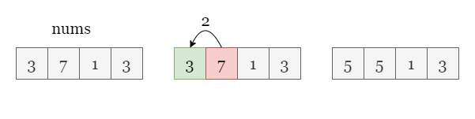
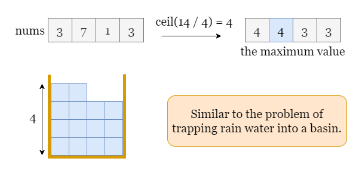
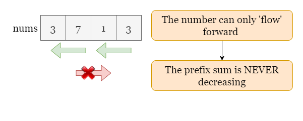
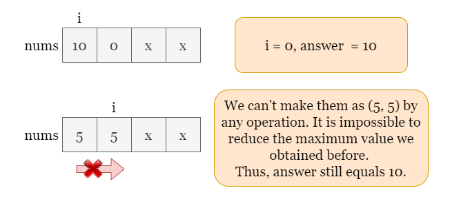

Solution
Overview
As shown in the picture below, we can make two operations to decrease nums[1] by 2 and increase nums[0] by 2, so the maximum value of nums is 5. It can be shown that this is the minimum maximum value we can make.

The example above is straightforward, how do we solve the problem given an arbitrary array?
Approach: Prefix Sum + Greedy.
Intuition
Here, "moving" a value refers to subtracting from one number and increasing another number.
The given operation only allows us to 'move' values forward (left). Let's start with another version of the problem: let's say we have operations that allow us to move values both forward and backward. Then, we have full control over the values, and we can apply a greedy approach of evenly distributing the values across the array. The answer would be the average rounded up. This is similar to trapping rainwater in a basin and calculating the height of the water.

Now back to the original problem, we can still try minimizing the maximum value with a greedy approach using integer division, but we have to solve the problem from the front to the back. During the iteration, we record the prefix sum prefixSum, the total sum we try to distribute over all the numbers we have traversed so far.
At index i, it seems that we can try to evenly distribute prefixSum into i + 1 integers evenly and find their maximum, which is tmp = ceil(prefixSum / (i + 1)). Can we keep updating answer as the smaller one between answer and tmp in the iteration?
No, quite the opposite. We update answer as the larger one of the two, that is answer = max(answer, ceil(prefixSum / (i + 1))). Why?
Recall that the operation only allows us 'move' values forward, so the previous smallest possible maximum value we have obtained can't be further reduced by the following numbers.

Take the picture below as an example, when we reach the index 1, we have prefixSum = 10, but it doesn't mean we can reduce the maximum value to 10 / 2 = 5. The value can't be moved from nums[0] to the following number nums[1], thus answer = 10 which we obtained when when iterating at index 0.

Without loss of generality, let's say that after reaching nums[i], we have obtained the minimum maximum value as answer_i and the prefix sum prefixSum_i. Now we take into account the following number nums[i + 1], according to the operation, it can only increase the prefix sum prefixSum_i as well as the answer_i. Therefore, the newly added number can't reduce the minimum maximum value, so we can't take the smaller one between answer and ceil(prefixSum / (i + 1)).
Please refer to the following slides for a detailed example:

Algorithm
- Initialize
answer = 0andprefixSum = 0. - Iterate over
nums, for each indexi:-
Update the prefix sum as
prefixSum += nums[i]. -
Check the maximum value we can obtain by averaging
prefixSumintoi + 1evenly using ceiling division. -
Take the larger one from
answerand the result from the previous integer division.
-
- Return
answer.
Implementation
Java
class Solution {
public int minimizeArrayValue(int[] nums) {
// Initialize answer and the prefix sum.
long answer = 0, prefixSum = 0;
// Iterate over nums, update prefix sum and answer.
for (int i = 0; i < nums.length; ++i) {
prefixSum += nums[i];
answer = Math.max(answer, (prefixSum + i) / (i + 1));
}
return (int)answer;
}
}
C++
class Solution {
public:
int minimizeArrayValue(vector& nums) {
// Initialize answer and the prefix sum.
long long answer = 0, prefixSum = 0;
// Iterate over nums, update prefix sum and answer.
for (int i = 0; i < nums.size(); ++i) {
prefixSum += nums[i];
answer = max(answer, (prefixSum + i) / (i + 1));
}
return answer;
}
};
Python3
class Solution:
def minimizeArrayValue(self, nums: List[int]) -> int:
# Initialize answer and the prefix sum.
answer = 0
prefix_sum = 0
# Iterate over nums, update prefix sum and answer.
for i in range(len(nums)):
prefix_sum += nums[i]
answer = max(answer, math.ceil(prefix_sum / (i + 1)))
return answer
Complexity Analysis
Let nn be the length of the input array nums.
-
Time complexity: O(n)O(n)
- We need to traverse
numsonce. - At each step of the iteration, we update
prefixSumandanswerand it takes O(1)O(1) time. - To sum up, the overall time complexity is O(n)O(n).
- We need to traverse
-
Space complexity: O(1)O(1)
- During the iteration, we only need to update the prefix sum
prefixSumand updateanswer, it takes O(1)O(1) space.
- During the iteration, we only need to update the prefix sum